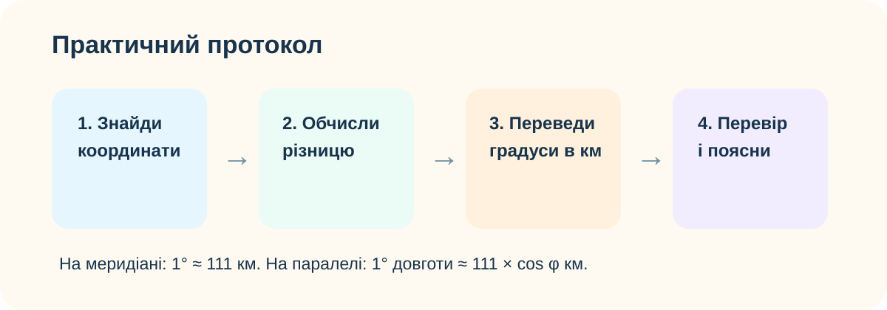
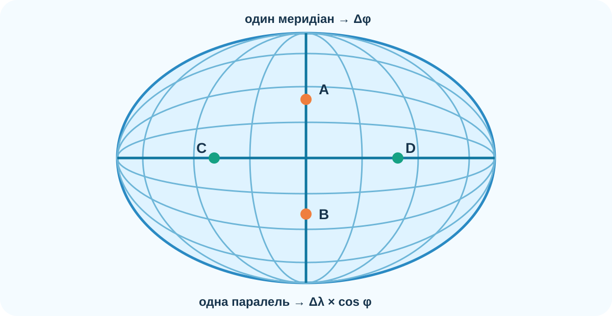

1. Практичний протокол

Визначте широти двох точок → знайдіть різницю широт Δφ → помножте кількість градусів приблизно на 111 км.
Визначте довготи двох точок → знайдіть Δλ → врахуйте, що довжина 1° довготи зменшується від екватора до полюсів.
2. Побачте різницю на моделі

3. Інтерактивний калькулятор
Один меридіан
Одна паралель
4. Реальна карта: перевірка цифровими даними
На OpenStreetMap нижче відкрито Центральну Європу. Оберіть дві точки приблизно на одній широті або довготі, запишіть їх координати й виконайте ручний розрахунок. Потім перевірте його цифровим картографічним сервісом.
OpenStreetMap — реальні картографічні дані. Невелика різниця між наближеним і геодезичним вимірюванням є нормальною.
5. Практична робота: протяжність материка

NASA Earth Observatory — глобальна топографія й батиметрія.
Завдання A — північ → південь
Оберіть материк і приблизно визначте широти його крайньої північної та крайньої південної точок. Обчисліть Δφ і протяжність у кілометрах.
Завдання B — захід → схід
Оберіть паралель, що перетинає материк, визначте довготи крайніх точок на цій паралелі та врахуйте cos φ.
6. Пастка: однакові 20° — різні кілометри
| Паралель | Δλ | Орієнтовна відстань |
|---|---|---|
| 0° | 20° | ≈ 2220 км |
| 60° | 20° | ≈ 1110 км |
| 80° | 20° | ≈ 386 км |
7. Коротке відео з КТП
Відео до §8, зазначене в КТП.
8. Теорія-опора після практики
Меридіан
Усі меридіани мають однакову довжину від полюса до полюса. Для шкільних обчислень 1° широти ≈ 111 км.
Екватор
Найдовша паралель. На екваторі 1° довготи теж приблизно 111 км.
Інші паралелі
Чим більша широта, тим коротша паралель. Тому 1° довготи ≈ 111 × cos φ км.
9. Практичний результат + CER
10. Домашнє завдання
§8. Визначте за картою приблизну протяжність одного материка з півночі на південь і на обраній паралелі із заходу на схід. Для обох випадків подайте: координати → різницю в градусах → обчислення → відповідь у км → коротку оцінку похибки.